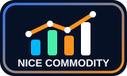
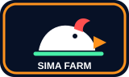
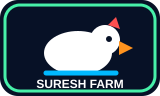

AI-Based IT Company & ERP Software Developer
The Brain
The Brain is a modern IT company that develops AI-based ERP and custom software for schools, poultry farms, corporate farms, iron factories, paper mills, rice mills, and many other industries. If you know exactly what you want, we build it your way. If you want expert guidance, we study your business and design the right software for you.
Company
The Brain
AI-based IT and business software developer
AI ERP
School ERP
Farm ERP
Factory ERP
Mill ERP
Custom Apps
Corporate Layer Poultry Management
Alerts On
Farm Control Center
AI Insight
Feed cost stable. Egg production up 3.2%. Today profitability positive.
Daily Profitability Trend
+12.8%
Built by The Brain
A famous AI-based IT company for modern business management
The Brain develops all kinds of business software and industry ERP systems. From school management ERP to corporate farm ERP, iron factory ERP, paper mill ERP, rice mill ERP, poultry farm ERP, and fully custom software, our mission is to make management smarter, faster, and easier through AI-supported digital systems.
Who it is for
Built for farm owners who want clear control every day
Layer Poultry Farms
Manage bird batches, sheds, egg production, feed use, mortality, health care, and flock performance from one organized system.
Farm Owners & Managers
See daily status, profitability, stock alerts, worker attendance, cash movement, and reports without waiting for manual calculations.
Growing Farm Businesses
Bring operations, accounting, stock, feed mill, workers, customer schedules, and reporting into a professional ERP workflow.
Interesting Features
Powerful AI-Based Poultry ERP with Daily Profitability Insights
AI Assistant & Smart Alerts
Built-in AI analyzes farm data to provide smart alerts, useful suggestions, reminders, and quick guidance for better daily decisions.
Daily Profitability Insights
Calculate day-wise profit and loss from daily production, sales, feed cost, expenses, and overall farm performance.
Daily Shed Entry
Record daily egg production, mortality, feed consumption, broken eggs, cull birds, body weight, and remarks.
Egg Stock & Schedule
Track egg stock, customer schedules, taken quantity, pending quantity, and delivery status in one place.
Sale, Purchase & Cashbook
Manage customer and vendor ledgers, cash receipts, payments, bank transactions, and party statements.
Feed Mill Management
Control feed formula, feed production, feed issue, stock value, and shed-wise feed usage from the ERP.
Health Care Reminder
Organize vaccination, oral medicine, dosage, route, next date reminders, and flock health records.
Smart Reports
Use profit and loss, day-wise reports, item stock, expense reports, and activity logs for better decisions.
Live Weather & Production Analysis
The ERP can compare live weather forecast, temperature, humidity, and bird production graphs to help owners understand why production is going down and what action may be needed.
Complete ERP modules
Everything a poultry farm needs in one connected system
Daily workflow
From morning shed entry to evening profit view
Enter Daily Farm Data
Production, mortality, feed, broken eggs, culls, shed remarks, and other daily records are entered quickly.
Update Stock & Accounts
Egg stock, feed stock, sales, purchases, cashbook, bank, and expenses stay connected with operational records.
Review AI Insights
The system highlights alerts, reminders, stock pressure, production movement, and useful decision points.
Check Daily Profitability
Owners can understand day-wise profit and loss based on production, sales, feed cost, expenses, and performance.
Why farms will care
Move from notebooks to professional farm control
AI inside: important alerts, reminders, and decision support are available in one system.
Daily profitability: owners can quickly understand today's farm profit and loss.
Fewer manual mistakes: reports are calculated from daily entries instead of repeated notebook work.
Owner-friendly dashboard: birds, egg production, feed per bird, and stock alerts are visible instantly.
Business ready: multiple users, role access, backup, export, and audit log are included.
AI and profitability
The strongest selling point for modern poultry farms
Built-In AI Assistant
LayerX Pro ERP is designed to make farm data easier to understand. The AI assistant can support owners with smart alerts, useful suggestions, reminders, and quick operational guidance based on the records inside the system.
Daily Profitability Insight
Instead of waiting for monthly calculations, owners can review day-wise profit and loss from production, sales, feed cost, labour, expenses, and stock movement. This makes decision-making faster and more practical.
Mobile farm control
See batch-wise profit, shed performance, and feed stock from your mobile
LayerX Pro ERP helps farm owners understand the real condition of the farm from anywhere. You can review batch-wise profit and loss, shed-wise production, feed intake, mortality, broken eggs, farm feed stock, feed mill stock, and daily performance directly from the mobile software.
Our purpose is to solve your practical farm problems. If you trust us with your farm management workflow, The Brain can reduce your daily calculation pressure through software, organize your records, and help you understand every account clearly and correctly.
LayerX Farm
Partly cloudy
Bhanderdihi Forecast | Humidity 85% | Wind 16.1 km/h
28 CShed Wise Performance05 Jul
Chicks Shed14,127 birds
- Chicks Birds14,127
- Egg Production-
- Feed/Day64g
1 No Shed21,959 birds
- Laying Birds21,959
- Egg Production16,982
- Hen-Day77.3%
2 No Shed23,822 birds
- Laying Birds23,822
- Egg Production22,405
- Hen-Day94.1%
HomeEntryPendingProfile
Global-level ideas
Modern poultry software features that make LayerX more attractive
Cost Per Egg
Show how much each egg costs after feed, medicine, labour, mortality, and daily expenses are considered.
Feed Efficiency Tracking
Monitor feed consumption, feed per bird, feed wastage, and production output to control one of the biggest farm costs.
Production Benchmarking
Compare shed-wise production, hen-day percentage, mortality, and feed performance to find weak points early.
Forecasting
Use existing farm data to estimate future egg production, feed needs, stock pressure, and expected revenue.
Traceability
Keep clear records for batches, medicine, vaccination, feed issue, sales, and customer delivery history.
Mobile-Ready Operation
Farm staff can enter daily data from phone, tablet, or laptop so owners can review reports faster.
Custom software development
Tell us your idea. We will build the software your way.
Build from your requirements
If you already know what kind of software you want, share your features, workflow, design preference, and business rules. The Brain can develop the software according to your exact requirements.
Build with our expertise
If you are not sure how the software should be planned, tell us your business problem. Our team can study your workflow, suggest the right system, and build a solution that matches your business.
Why choose The Brain
Software that feels practical, intelligent, and business-ready
Industry Understanding
We do not build generic screens only. We study how the business actually works, then design modules around real daily workflow.
AI-First Thinking
Wherever possible, we add alerts, insights, reminders, summaries, and automation so management can act faster.
Owner-Level Dashboard
The owner gets a clear overview of operations, money flow, stock, teams, pending work, and performance from one place.
Scalable ERP Structure
Our systems can grow with users, branches, departments, roles, reports, backups, and advanced modules.
Our build process
From your idea to a complete software product
Requirement Discussion
We understand your business, users, daily workflow, reports, problems, and future growth plan.
System Planning
We prepare the module structure, dashboard flow, roles, data points, and automation opportunities.
Development & Testing
The software is built, checked, improved, and tested with real use cases before handover.
Training & Support
We help users understand the system and support improvements as the business starts using it.
Industries we serve
One technology partner for many types of businesses
Education
Poultry Farm
Corporate Farm
Iron Industry
Paper Mill
Rice Mill
Retail & Wholesale
Manufacturing
Custom Business
Where our software is running
Trusted by schools, farms, and business companies
The Brain software is already being used by real organizations. Alfred Nobel Public School, Durgapur Assam Society English School, Little Star English Medium School, Sunrise English Academy, Kids English School, Life Laying Farm Private Limited, Nice Commodity Private Limited, Sima Poultry Farm, Amar Bangla Rice Mill Private Limited, Jyotis Rice Mill Private Limited, Shankar Rice Mill, Suresh Poultry Farm, Odisha poultry farms, and many more companies use our software to manage their daily work with better control.

Business CompanyNice Commodity Private Limited
Poultry FarmSima Poultry Farm
Poultry FarmSuresh Poultry FarmReady to build
Your business idea can become a professional software system
Tell The Brain what you want to manage. We can create the structure, design the workflow, build the software, and help your team use it with confidence.
Why LayerX stands out
Designed for poultry farm owners who want business clarity, not just data entry
Traditional Notebook
- Manual daily calculation
- Delayed profit/loss understanding
- Difficult stock and feed tracking
- Reports depend on staff preparation
- Higher chance of missing records
LayerX Pro ERP
- AI-based alerts and insights
- Daily profitability view
- Egg, feed, cashbook, stock, worker, and health care in one system
- Instant dashboards and professional reports
- Backup, user roles, audit log, and secure farm records
Marketing pitch
A clear message for poultry farm owners in India
LayerX Pro ERP gives farm owners a clear daily picture of production, stock, money flow, workers, medicine, and farm performance. Its biggest attraction is the built-in AI assistant and daily profitability report, helping owners understand profit and loss every day.
What to show in a demo
- Daily shed entry in about one minute
- AI assistant and smart alerts
- Per day profitability calculation
- Egg stock and customer schedule
- Profit/loss and expense report
- Worker attendance and payment
- Backup and user role security
Support & setup
Ready for real farm implementation
Farm Data Setup
Initial birds, sheds, godowns, inventory items, workers, parties, and opening balances can be organized before daily use begins.
User Training
Owners, managers, accounts staff, store staff, and workers can use role-based access so every person sees the right tools.
Backup & Security
Backup, audit log, login security, user roles, and export options help protect business records and keep operations accountable.
Common questions
Answers farm owners usually ask before a demo
Can LayerX Pro ERP calculate daily farm profit?
Yes. The system is designed to connect production, sales, feed cost, expenses, and stock movement so owners can review day-wise profitability.
Does the software include AI?
Yes. LayerX focuses on AI-based farm operation support through smart alerts, insights, reminders, and decision-friendly dashboards.
Can it manage egg stock and customer schedules?
Yes. Egg stock, scheduled quantity, taken quantity, pending balance, sales, and customer statements can be managed in one place.
Can multiple staff members use it?
Yes. The ERP includes user login and role access so owners, managers, accounts staff, store staff, and workers can use suitable modules.
Is it useful for West Bengal poultry farms?
Yes. The website and product positioning are focused on layer poultry farms in West Bengal, with practical modules for daily farm operations.
Start selling
Request a free demo
Submit the farm owner's name, location, phone number, and farm size. The Brain sales and service team will contact you with the right ERP demo.
Company contact
Speak directly with The Brain ERP
TB
Samrat Hazra
Director, The Brain ERP
This website is mobile comfortable and designed to look beautiful on every phone screen.
Live visitor count
People visiting The Brain website
The visitor count updates as more people visit the website.
Website Visitors
2,60,000
Live count